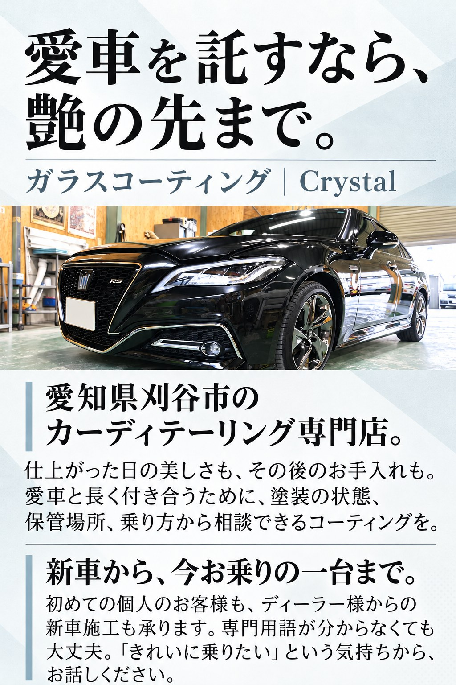
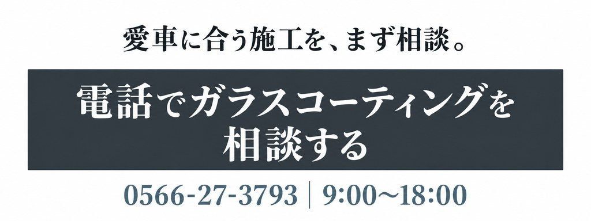
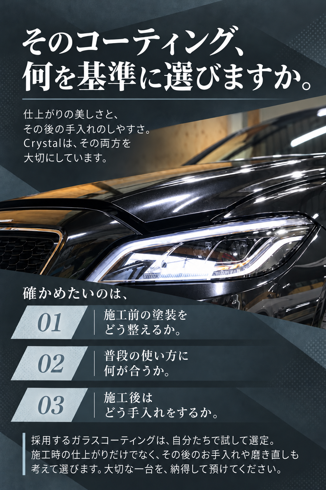
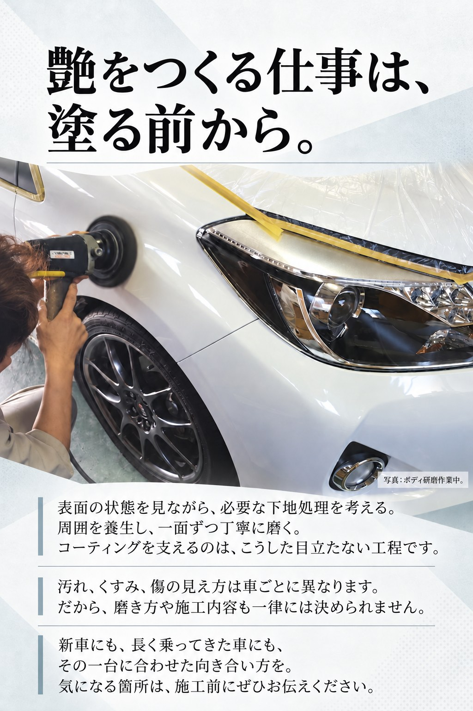
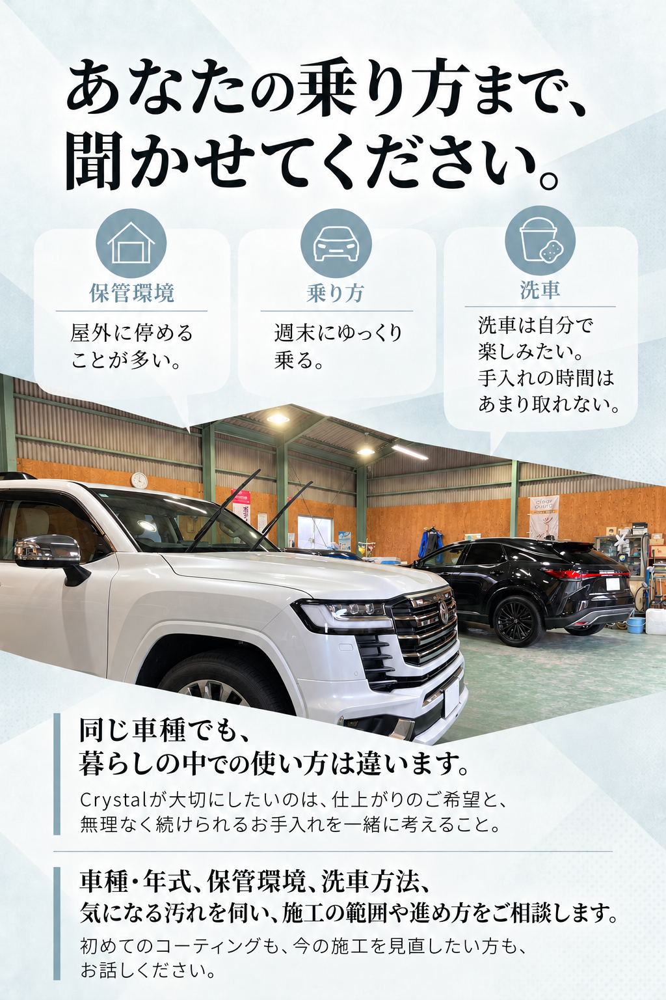
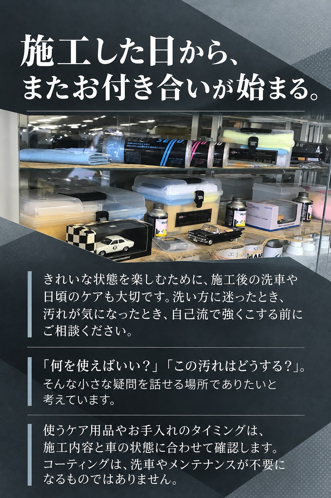
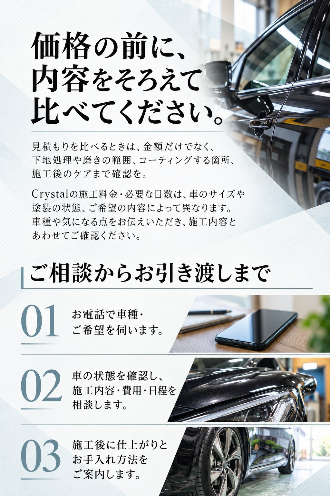
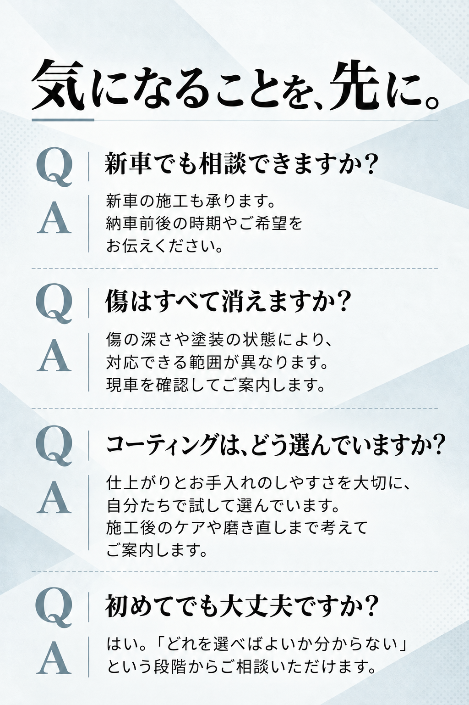
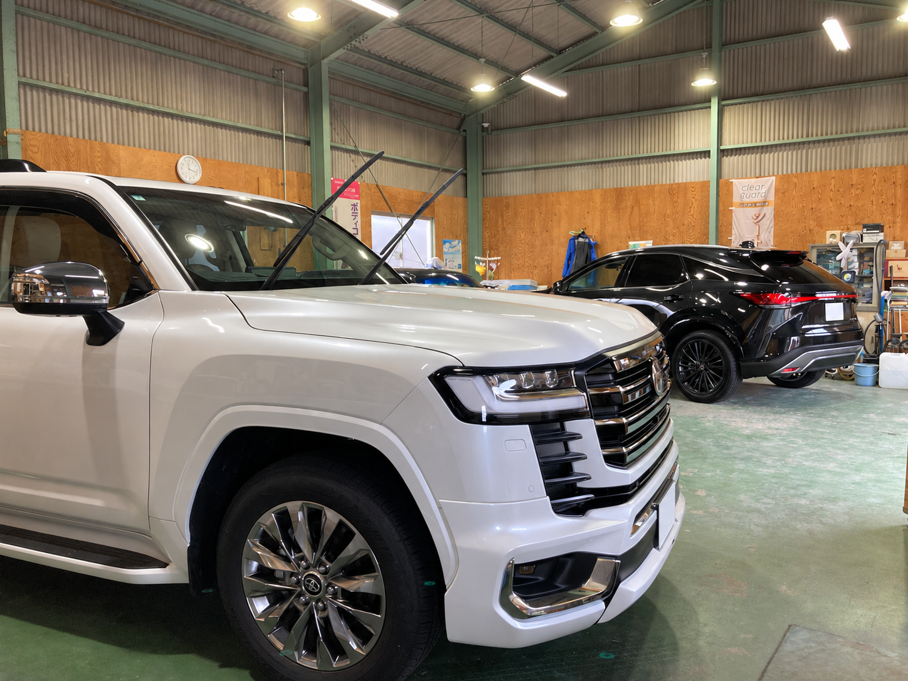

愛車を託すなら、艶の先まで。Crystalのガラスコーティング









次に車を見る時間が、
楽しみになるように。
艶のある一台と、安心して相談できる場所。
Crystalは、大切な車と長く付き合いたい方の施工相談をお待ちしています。
お電話では「ガラスコーティングの相談」とお伝えください。
車種・年式・気になる点が分かると、お話がスムーズです。
クリスタル｜TOTAL BODY CARE Crystal
〒448-0812 愛知県刈谷市高須町1丁目9-15電話 0566-27-3793
営業時間 9:00〜18:00
定休日 日曜・祝日、夏季・冬季休業
来店前に、お電話で日程をご確認ください。